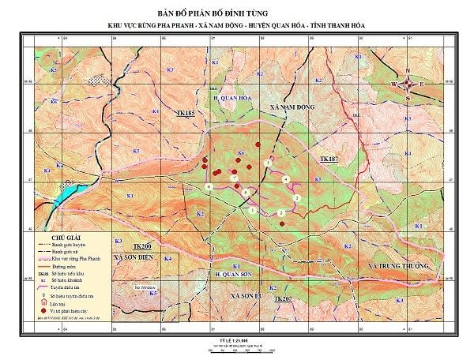

1. Đặc điểm hình thái
Cây gỗ đơn trục, thường xanh, cây trưởng thành cao khoảng từ 10 – 15 m. Thân tròn, vỏ trơn nhẵn, khi già bong mảng vỏ mỏng phía ngoài, nhìn tổng thể có màu đỏ (giống vỏ cây Ổi – Myrtaceae). Cành mảnh, mọc đối và xòe ngang. Lá mọc xoắn ốc, xếp thành 2 dãy, hình dải, dài 2 – 4cm, rộng 0,2 – 0,4cm, thẳng hay hơi cong ở gần đầu, ở mặt dưới có 2 dải lỗ khi màu trăng trắng. Nón đực hình đầu mang từ 8-10 đính trên cuống, có vảy, mọc ở nách lá; mỗi hoa (nón) có lá hoa ở gốc mang 7-10 nhị, mỗi nhị có 3 túi phấn.
Nón cái đơn độc hay mọc chùm 3 – 5 cái ở nách lá, mỗi nón gồm 9 – 10 vảy, ở mặt bụng mỗi vảy có 2 noãn. Hạt hình trứng, dài khoảng 2,7cm, đường kính khoảng 1,8cm, vỏ hạt vàng hoặc xanh, khi chín mọng nước mầu tím đỏ.
2. Phân bố
Lào Cai, Hà Giang, Sơn La, Cao Bằng, Hòa Bình, Hà Nội (Ba Vì), Quảng Trị, Thừa Thiên Huế, Kontum, Gia Lai, Lâm Đồng, Thanh Hóa (rừng Pha Phanh, Khu BTTN Pù Luông).
